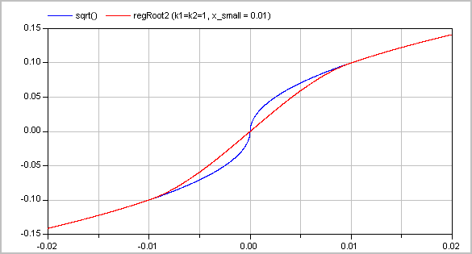
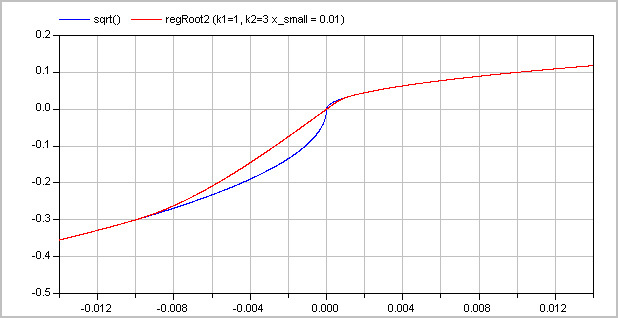
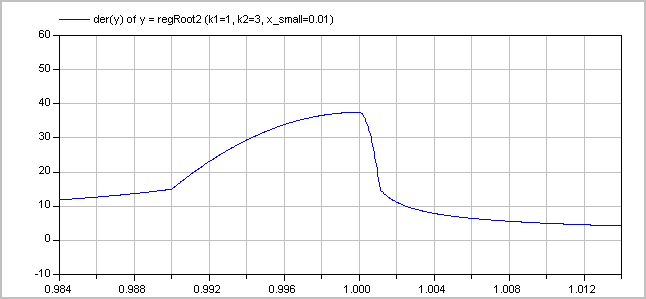
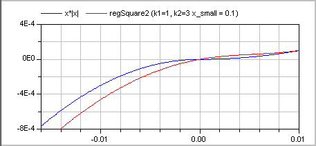
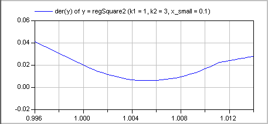

Extends from Modelica.Icons.Library (Icon for library).
| Name | Description |
|---|---|
| Check whether boundary definition is correct | |
| Anti-symmetric square root approximation with finite derivative in the origin | |
| Derivative of regRoot | |
| Anti-symmetric square approximation with non-zero derivative in the origin | |
| Anti-symmetric power approximation with non-zero derivative in the origin | |
| Anti-symmetric approximation of square root with discontinuous factor so that the first derivative is finite and continuous | |
| Anti-symmetric approximation of square with discontinuous factor so that the first derivative is non-zero and is continuous | |
| Approximation of a general step, such that the characteristic is continuous and differentiable | |
| Evaluate polynomial of order 3 that passes the origin with a predefined derivative | |
| regFun3 | Co-monotonic and C1 smooth regularization function |
| cubicHermite | Evaluate a cubic Hermite spline |
| cubicHermite_withDerivative | Evaluate a cubic Hermite spline, return value and derivative |
 Modelica_Fluid.Utilities.checkBoundary
Modelica_Fluid.Utilities.checkBoundary
| Name | Description |
|---|---|
| mediumName | |
| substanceNames[:] | Names of substances |
| singleState | |
| define_p | |
| X_boundary[:] | |
| modelName |
Modelica_Fluid.Utilities.regRoot
| Function | Approximation | Range |
|---|---|---|
| y = regRoot(x) | y ~= sqrt(abs(x))*sgn(x) | abs(x) >> delta |
| y = regRoot(x) | y ~= x/sqrt(delta) | abs(x) << delta |
With the default value of delta=0.01, the difference between sqrt(x) and regRoot(x) is 16% around x=0.01, 0.25% around x=0.1 and 0.0025% around x=1.
Extends from Modelica.Icons.Function (Icon for a function).
| Name | Description |
|---|---|
| x | |
| delta | Range of significant deviation from sqrt(abs(x))*sgn(x) |
| Name | Description |
|---|---|
| y |
Modelica_Fluid.Utilities.regRoot_der
| Name | Description |
|---|---|
| x | |
| delta | Range of significant deviation from sqrt(x) |
| dx | Derivative of x |
| Name | Description |
|---|---|
| dy |
Modelica_Fluid.Utilities.regSquare
| Function | Approximation | Range |
|---|---|---|
| y = regSquare(x) | y ~= x^2*sgn(x) | abs(x) >> delta |
| y = regSquare(x) | y ~= x*delta | abs(x) << delta |
With the default value of delta=0.01, the difference between x^2 and regSquare(x) is 41% around x=0.01, 0.4% around x=0.1 and 0.005% around x=1.
Extends from Modelica.Icons.Function (Icon for a function).
| Name | Description |
|---|---|
| x | |
| delta | Range of significant deviation from x^2*sgn(x) |
| Name | Description |
|---|---|
| y |
Modelica_Fluid.Utilities.regPow
| Function | Approximation | Range |
|---|---|---|
| y = regPow(x) | y ~= abs(x)^a*sgn(x) | abs(x) >> delta |
| y = regPow(x) | y ~= x*delta^(a-1) | abs(x) << delta |
| Name | Description |
|---|---|
| x | |
| a | |
| delta | Range of significant deviation from x^a*sgn(x) |
| Name | Description |
|---|---|
| y |
Modelica_Fluid.Utilities.regRoot2
Approximates the function
y = if x ≥ 0 then sqrt(k1*x) else -sqrt(k2*abs(x)), with k1, k2 > 0
in such a way that within the region -x_small ≤ x ≤ x_small, the function is described by two polynomials of third order (one in the region -x_small .. 0 and one within the region 0 .. x_small) such that
Typical screenshots for two different configurations are shown below. The first one with k1=k2=1:

and the second one with k1=1 and k2=3:

The (smooth) derivative of the function with k1=1, k2=3 is shown in the next figure:

Literature
| Name | Description |
|---|---|
| x | abscissa value |
| x_small | approximation of function for |x| <= x_small |
| k1 | y = if x>=0 then sqrt(k1*x) else -sqrt(k2*|x|) |
| k2 | y = if x>=0 then sqrt(k1*x) else -sqrt(k2*|x|) |
| use_yd0 | = true, if yd0 shall be used |
| yd0 | Desired derivative at x=0: dy/dx = yd0 |
| Name | Description |
|---|---|
| y | ordinate value |
Modelica_Fluid.Utilities.regSquare2
Approximates the function
y = if x ≥ 0 then k1*x*x else -k2*x*x, with k1, k2 > 0
in such a way that within the region -x_small ≤ x ≤ x_small, the function is described by two polynomials of third order (one in the region -x_small .. 0 and one within the region 0 .. x_small) such that
A typical screenshot for k1=1, k2=3 is shown in the next figure:

The (smooth, non-zero) derivative of the function with k1=1, k2=3 is shown in the next figure:

Literature
| Name | Description |
|---|---|
| x | abscissa value |
| x_small | approximation of function for |x| <= x_small |
| k1 | y = (if x>=0 then k1 else k2)*x*|x| |
| k2 | y = (if x>=0 then k1 else k2)*x*|x| |
| use_yd0 | = true, if yd0 shall be used |
| yd0 | Desired derivative at x=0: dy/dx = yd0 |
| Name | Description |
|---|---|
| y | ordinate value |
Modelica_Fluid.Utilities.regStep
| Name | Description |
|---|---|
| x | Abscissa value |
| y1 | Ordinate value for x > 0 |
| y2 | Ordinate value for x < 0 |
| x_small | Approximation of step for -x_small <= x <= x_small; x_small > 0 required |
| Name | Description |
|---|---|
| y | Ordinate value to approximate y = if x > 0 then y1 else y2 |
Modelica_Fluid.Utilities.evaluatePoly3_derivativeAtZero
| Name | Description |
|---|---|
| x | Value for which polynomial shall be evaluated |
| x1 | Abscissa value |
| y1 | y1=f(x1) |
| y1d | First derivative at y1 |
| y0d | First derivative at f(x=0) |
| Name | Description |
|---|---|
| y |
Approximates a function in a region between x0 and x1
such that
In this region, a continuation is constructed from the given points
(x0, y0), (x1, y1) and the respective
derivatives. For this purpose, a single polynomial of third order or two
cubic polynomials with a linear section in between are used [Gasparo
and Morandi, 1991]. This algorithm was extended with two additional
conditions to avoid saddle points with zero/infinite derivative that lead to
integrator step size reduction to zero.
This function was developed for pressure loss correlations properly
addressing the static head on top of the established requirements
for monotonicity and smoothness. In this case, the present function
allows to implement the exact solution in the limit of
x1-x0 -> 0 or y1-y0 -> 0.
Typical screenshots for two different configurations
are shown below. The first one illustrates five different settings of xi and yid:

The second graph shows the continous derivative of this regularization function:

Literature
| Name | Description |
|---|---|
| x | Abscissa value |
| x0 | Lower abscissa value |
| x1 | Upper abscissa value |
| y0 | Ordinate value at lower ordinate value |
| y1 | Ordinate value at upper ordinate value |
| y0d | Derivative at lower abscissa value |
| y1d | Derivative at upper abscissa value |
| Name | Description |
|---|---|
| y | Ordinate value |
| c | Slope of linear section between two cubic polynomials or dummy linear section slope if single cubic is used |
| Name | Description |
|---|---|
| x | Abscissa value |
| x1 | Lower abscissa value |
| x2 | Upper abscissa value |
| y1 | Lower ordinate value |
| y2 | Upper ordinate value |
| y1d | Lower gradient |
| y2d | Upper gradient |
| Name | Description |
|---|---|
| y | Interpolated ordinate value |
| Name | Description |
|---|---|
| x | Abscissa value |
| x1 | Lower abscissa value |
| x2 | Upper abscissa value |
| y1 | Lower ordinate value |
| y2 | Upper ordinate value |
| y1d | Lower gradient |
| y2d | Upper gradient |
| Name | Description |
|---|---|
| y | Interpolated ordinate value |
| dy_dx | Derivative dy/dx at abscissa value x |